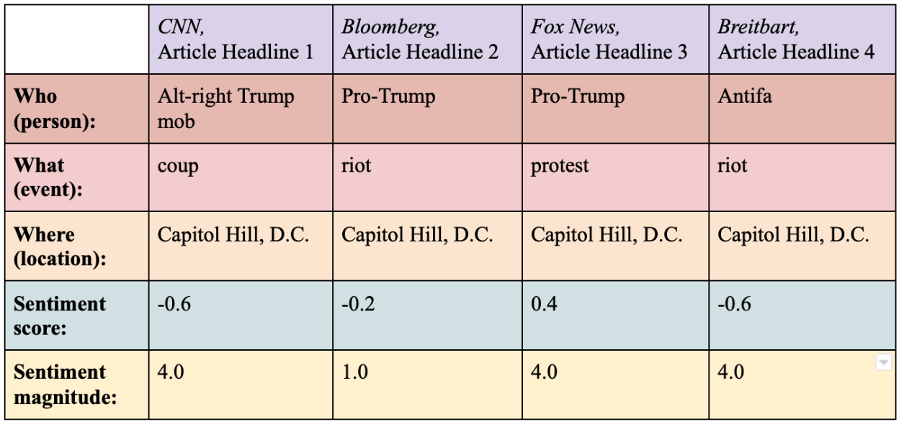

Computational Journalism
I started coding because of the enthrall of (re)building something new, and continued because I realized computer science could be applied to fields from biology to music. I started journalism simply because I like to write, and continued because it’s a way I can learn a bit of everything. With knowledge, however, comes responsibility. Journalism is meant to give others a better understanding of the world, but this understanding gets muddled by media bias, rampant disinformation, and political polarization. I love computational journalism because I can mitigate this problem by efficiently unraveling complex stories in a more understandable and reputable manner using algorithms and data–my own serendipity.
Previous internship experience
Phone2Action
I was hired as an intern for the engineering team of Digital Advocacy tech startup Phone2Action after winning Phone2Action's sponsorship prize at our high school hackathon HackTJ for my project CAPConnect. ‘CAPConnect’ is a mobile app that connects individuals with local campaigns based on their interests (e.g. wildlife preservation, increased minimum wage). The app was built using Elasticsearch, Android Studio (Java), and Flask (Python).
Phone2Action is where I formally recieved my first taste of the blend between politics and computer science. During this internship, I created a virtual reality simulation integrated with voice recognition where the user can speak with their representative about a specific campaign issue (ex. the Voting Rights Act). After transcribing their answers using the Google Speech-to-Text API, the program compiles their message into an email and sends it to their representative.
Human-Computer interaction research at George Mason University
As a research intern on the human-computer interaction team at George Mason University, I coded a Google Slides add-on called "Slide Helper". This add-on uses decision-trees to predict the style (font size, font color, font family, etc.) of the user's selected element based on the style of similar elements.
Please watch the above video where my partner and I can explain how this project works.
This project can be implemented as a journalistic tool as well. AP style is constantly changing, and it can be difficult as journalists to keep up with these adjustments. By conglomerating a singular database for the AP Style rules, we can use a refined version of "Slide Helper" to predict the way a certain phrase in an article should be formatted according to AP Style. By alleviating the worries of journalists in having to manually check for and edit AP Style-related errors in their articles, journalists will have more time to focus on the research and accuracy of their articles.
A Slippery Slope
I constructed this research project to further explore my interest in computational journalism.
View ProjectPurpose
News media bias can have immense detrimental effects, including increased political polarization. Event selection, the events a news outlet chooses to cover or the manner in which a news outlet covers an event, is an important aspect of news media bias. To mitigate event selection, this program extracts text from user-inputted news outlets centered on the same event, and outputs the results in a visualization comparing each article’s “who, what, and where” along with the sentiment score. The visualization, presented as a chart, allows the user to understand the comparative bias across articles, and thereby the comparative bias across media outlets. Through computational event selection, we can efficiently create more aware readers and journalists, leading to more-fact-based articles and more-trustworthy media outlets.
Figure 1. Displayed here is an example of what the output will look like on the website. In this example, the input is a total of four articles covering the storming of Capitol Hill that occured on January 6, 2021. Each of the articles is from a different news media outlet. Article one is from CNN (left-leaning), article two is from Bloomberg (moderately centered), article three is from Fox News (right-leaning), and article four is from Breitbart (significantly right-leaning). The articles in this example are not real, and are used solely to emphasize the difference in answers to “who, what, and where” along with the sentiment score across a spectrum of news media outlets with biases ranging from left to right. For instance, in labeling the “what” of their respective fabricated articles, CNN identifies it as a coup, whereas Fox News identifies it as a protest. It is this same understanding of differences in wording for the same event that the user will gain after analyzing the chart, helping the user determine the amount of bias or type of lean present in the articles that they are reading.
Process
Let's go through how this program works.
- The User-Interface prompts the user to enter three articles on the same event.
- On the back-end, the News-please API is used to extract the given articles' headline, lead, and main text.
- For each article, the Cloud Natural Language API is used to determine the "who, what, and where" of the article.
- For each article, the Cloud Natural Language API is used to determine the sentiment score and sentiment magnitude of the article. "The score of a document's sentiment indicates the overall emotion of a document. The magnitude of a document's sentiment indicates how much emotional content is present within the document, and this value is often proportional to the length of the document." (Cloud Natural Language API documentation)
- The "who, what, where" and sentiment score and magnitude of each article is returned to the User-Interface in the form of a table, as shown in the figure above.
Click here to read the full research paper.